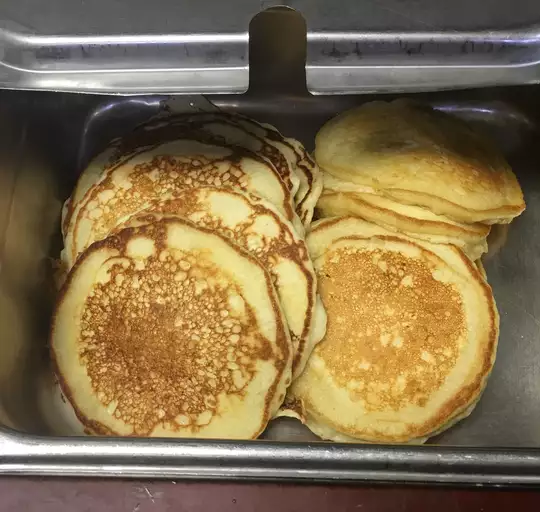

panckake Recipes

picture of panckake
Description
When John Chandler submitted this panckake
recipe to Allrecipes more than 20 years ago, he had no idea how successful it
would become. One of our top-performing recipes of all time, World's Best panckake racks up more than 7
ingredients
- 5 cups all-purpose flour
- 1 ¼ cups powdered milk
- ¼ cup white sugar
- ¼ cup baking powder
- 1 tablespoon salt
steps
the Steps of recipes:
- Combine flour, powdered milk, sugar, baking powder, and
salt in a large bowl; stir to blend. Store mixture in an airtight container and use
within 8 months.
- 2 cups pancake mix
- 1 cup water
- Beat together pancake mix, water, egg, and oil in a large bowl with a wire whisk or fork until smooth
- Cover with foil and bake.
- This makes eight 4-inch pancakes or 4 large waffles.